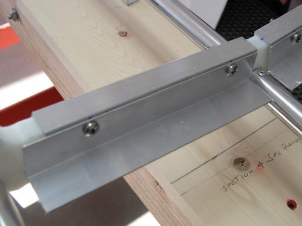

| Wood Slat Floor ( 3 of 7 ) | Menu Last Page Next Page |
|
 |
Aluminum Channel - Cross Sections 4 and 5 Cut 6" ( 4ea) sections of 1/2" trim channel using a jigsaw with a metal cutting blade. Round the edges smooth with a file and also smooth out around the holes. Drill 2 holes in the channel (use a drill press if possible) one inch from each end of the sections. Line one edge of the channel even with the edge of the keel tube. Drill through the HDPE using the angle holes as a guide.
Aluminum Angle - Cross Sections 4 and 5 Cut 6.5" (4ea) sections of 3/4"or 1" angle. Line up the keel side of the channel even with the angle section and drill 2 holes in the angle using the channel holes as a guide. Attach the angle / channel with 10/24 stainless machine screws/nuts. |